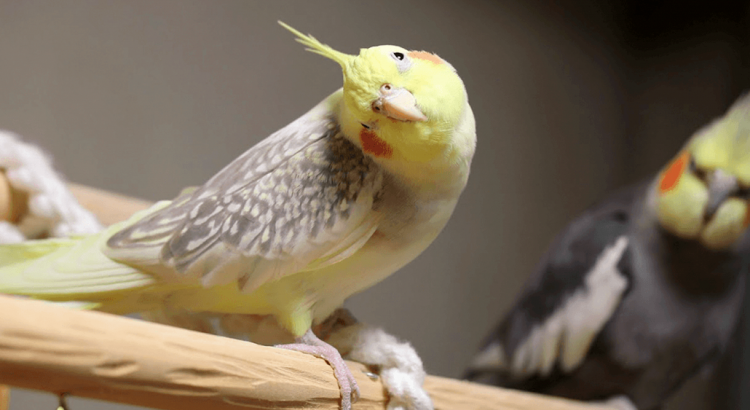

As rações para calopsita filhote e adulta são excelentes para oferecer a nutrição do dia a dia. Entretanto, um agrado de vez em quando não faz mal a ninguém! Pelo contrário, os petiscos podem ser uma forma de esforço positivo, ajudando a ter mais controle sobre o comportamento do seu pássaro.
Assim, se você está pesquisando como criar uma calopsita e até amansá-la, fica a dica. Os petiscos são ótimos aliados! Entre as opções liberadas, podemos citar frutas, verduras, legumes e sementes.
No entanto, fique atento e pesquise antes de oferecer qualquer alimento que não seja próprio para pets. Na dúvida, busque um produto especializados.
4. A água que o passarinho bebe
Nem só de ração vive uma calopsita. Outro passo importante de cuidados com calopsita é pensar na hidratação. A gaiola deve estar sempre bem equipada, com um bebedouro abastecido.
Uma dica importante é oferecer água limpa e fresca todos os dias. A água parada, além de desagradável, pode conter sujeira e microrganismos nocivos. Outra dica é higienizar o bebedouro uma vez por semana. Para isso, utilize detergente neutro e um material não abrasivo, e não se esqueça de enxaguar bem!
5. Banhos são bem-vindos
Se você adora tomar uma boa ducha saiba que a calopsita possui a mesma opinião! As penosas gostam de tomar banho e, na natureza, frequentemente buscam um local com água para se higienizar. Por isso, é importante oferecer condições para que sua ave se banhe com frequência. As principais maneiras de dar banho em calopsita são:
Vasilha com água: essa é uma forma simples e eficaz. Basta deixar uma vasilha rasa, com 1 ou 2 dedos de água próxima de sua ave. Sempre que tiver vontade, ela irá se aproximar e tomar banho de forma independente.
Borrifador de água: os borrifadores de água são acessórios polêmicos. O item armazena água em seu interior. Apertando um gatilho, a água sai em uma suave borrifada. Enquanto algumas calopsitas adoram, outras odeiam tomar banho assim! A dica é experimentar com sua penosa e, caso ela não goste, evitar utilizar no futuro.
Chuveiro:as calopsitas também adoram uma boa chuveirada! Essa é uma de suas formas de tomar banho favoritas. Tanto que alguns tutores levam sua amiga voadora para o banheiro na hora da ducha. É preciso apenas ter cuidado com respingos de produtos como shampoo e sabonete. Além de não serem indicados para pets, eles podem causar irritações e problemas de pele.
Lembre-se que os banhos nas calopsitas deve ser dado apenas com água, sem shampoo, sabão ou qualquer outro produto. Dessa forma, você manterá sua amiga limpa e segura!
6. Gaiolas também tomam banho
Não é só a calopsita que deve tomar banho de vez em quando. Sua gaiola também precisa ser higienizada regularmente para manter sua saúde e bem-estar. Primeiramente, o espaço deve ter um substrato higiênico, que é um material que fica ao fundo da gaiola, absorvendo as fezes e outras sujeiras.
Papel e serragem são opções muito utilizadas, porém exigem a presença de uma grade, que impede o contato direto do pet com o fundo. Em lojas especializadas, é possível encontrar areias granuladas específicas para pássaros. Esse produto é preparado de forma cuidadosa, com substâncias seguras para as penosas.
Independente da sua escolha, deve-se limpar o substrato diariamente, removendo o excesso de fezes. Já a faxina na gaiola também deve ocorrer a cada 15 dias. Nesse momento, remova todos os acessórios e limpe tudo com água e desinfetante com base de amônia quaternária. Esse produto remove bactérias e microrganismos.

7. Brincar é bom e todo mundo gosta
As calopsitas são conhecidas por seu comportamento agitado! Muito interativas, essas charmosas aves adoram se divertir com seus tutores, brincando e realizando diferentes atividades.
Por isso, é essencial que você dedique alguns momentos do dia a brincar com sua amiga. Além disso, as calopsitas gostam de se sentir parte da família. Tirá-la da gaiola e levá-la como companhia, enquanto você realiza atividades do dia a dia é uma ótima forma de fortalecer os laços com sua pet voadora!

8. Um bom acessório é essencial
Todo ambiente precisa de um bom acessório para ficar completo! O mesmo ocorre com as calopsitas. Nossas amigas necessitam de brinquedos para que possam se divertir sozinhas, enquanto você está envolvido com outras atividades.
Um bom exemplo de como cuidar de calopsita filhote e adulto é adquirir brinquedos como balanços, poleiros, bolinhas, sinos e espelhos. Escolha os que mais se enquadram à personalidade de sua pet!
9. Atenção à hora de dormir
Apesar da fama de agitadas, as calopsitas adoram uma boa noite de sono. De acordo com veterinários, as penosas precisam dormir de 10 a 12 horas por dia para se sentirem descansadas!
Por isso, é importante que você forneça um espaço tranquilo, sem muitos ruídos ou luz direta. Se você não tem um local assim na sua casa e está se perguntando “devo a gaiola da calopsita para dormir?”, saiba que essa não é uma má ideia.
Com a gaiola coberta, a ave ficará mais calma, relaxada e longe da luz. A técnica também é recomendada para os dias mais frios, para proteger o pássaro do frio. Por isso, quem está procurando como cuidar de calopsita no inverno, fica a dica! Cobrir a gaiola é uma boa ideia.

10. Um veterinário para chamar de seu
Ninguém duvida que pássaros domésticos sejam pets incríveis. Com sua ótima personalidade, as calopsitas não ficam atrás dos cães ou gatos quando o assunto é popularidade.
Porém, alguns tutores ainda não possuem o hábito de levar sua penosa ao veterinário regularmente. Ter um profissional de sua confiança, que acompanha o desenvolvimento de seu pet, é a melhor forma de ficar de olho em sua saúde.
Assim, veterinário poderá notar qualquer alteração de maneira rápida e, com isso, realizar um tratamento precoce e eficaz. Em clínicas bem equipadas, você encontra veterinários especializados em pets silvestres e exóticos, como as calopsitas.
Com essas 10 dicas de como cuidar de calopsita sua amiga poderá crescer de forma saudável e feliz! Lembre-se que as calopsitas possuem uma expectativa de vida de mais de 20 anos! Por isso, pode ter certeza que sua amiga penosa ainda trará muita alegria para seu lar!